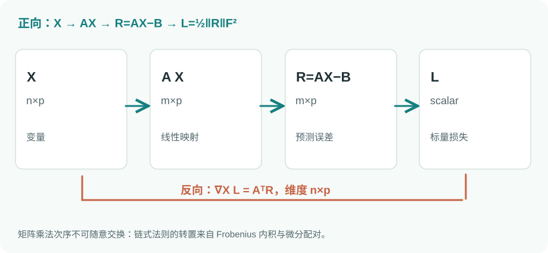
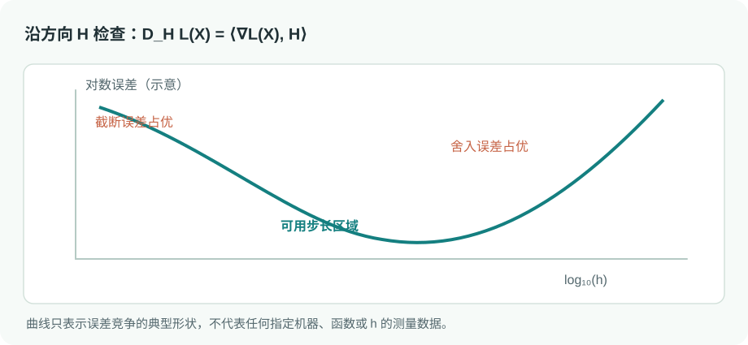

01 / 梯度到底应该与 X 同形，还是与输出同形？
令 A∈R^{m×n}、X∈R^{n×p}、B∈R^{m×p}，定义损失 L(X)=1/2‖AX−B‖F²。最终 L 是标量，但优化变量 X 是一个 n×p 矩阵。欧氏/Frobenius 梯度 ∇ₓL 必须与 X 同形，这样才能进行更新 X←X−η∇ₓL。

矩阵微分把“输入发生微小改变”直接映射成“输出的一阶变化”，而不需要先人为选择向量化布局。对固定的 A、B，残差 R=AX−B 的微分只有 dR=A·dX。
02 / 先选梯度约定，再写公式
本教程采用实矩阵上的 Frobenius 内积 〈G,H〉F=tr(GᵀH)，以 dL=〈∇ₓL,dX〉F 定义梯度。这就是计算优化中常见的“梯度与变量同形”的约定。讨论 Jacobian 时另行声明：向量函数 f:Rⁿ→Rᵐ 的 Jacobian 取 Jᵢⱼ=∂fᵢ/∂xⱼ，尺寸 m×n。
不同材料可能分别使用分子布局、分母布局的导数表格，看似相互转置。首要规则是先声明 Jacobian/梯度定义与张量尺寸，再计算，绝不能把不同布局公式拼接在一起。
| 对象 | 输入 | 输出/梯度维度 |
|---|---|---|
| f(x) 标量函数 | x∈Rⁿ | ∇f∈Rⁿ |
| F(x) 向量函数 | x∈Rⁿ | J∈R^{m×n} |
| L(X) 标量函数 | X∈R^{n×p} | ∇ₓL∈R^{n×p} |
03 / 从微分推导最小二乘矩阵梯度
从 L=1/2 tr(RᵀR) 出发。因为迹的微分是线性的，且实标量的迹等于自身，所以 dL=tr(RᵀdR)。再代入 dR=A dX，利用迹的循环性质得到 tr((AᵀR)ᵀ dX)，与梯度约定配对即可识别：
严格的形状检查：Aᵀ 是 n×m，R 是 m×p，乘积为 n×p。若错误地写成 R Aᵀ，通常维度不匹配，即使在方阵时勉强能乘，结果也不对应 Frobenius 内积梯度。
对 L(x)=1/2‖Ax−b‖₂² 的向量版本，可以令 p=1，直接得到熟悉的 ∇L=Aᵀ(Ax−b)。这是一条在机器学习、反问题与最小二乘优化中反复出现的基本链。
04 / 迹技巧、乘积微分和逆矩阵微分
矩阵微分必须遵守乘法的次序：d(XY)=(dX)Y+X(dY)；一般不能交换 X 与 Y。在 X 可逆时，由 X X⁻¹=I 微分得到 d(X⁻¹)=−X⁻¹(dX)X⁻¹。
对实非奇异方阵 X，Jacobi 公式给出 d det(X)=det(X) tr(X⁻¹dX)。如果 X 还是实对称正定矩阵，则 ∇ₓ log det(X)=X⁻ᵀ=X⁻¹（梯度约定与正定域下）。在非正定实矩阵上不能无条件以实值 log det 讨论。
若输入发生扰动 H，Frobenius 梯度方向导数等于 〈∇L,H〉F；这是比记忆大量导数表更可靠的自检方式。
05 / 链式法则背后真正传递的是什么？
设 Y=AX，标量损失为 φ(Y)。前向扰动 dY=A dX；把它代回 dφ=〈∇Yφ,dY〉F 得 dφ=〈Aᵀ∇Yφ,dX〉F。所以反向传播把输出梯度乘以线性映射的伴随算子。对实矩阵就是转置，对复矩阵使用共轭转置且需要明确复微分/Wirtinger 约定。
如果 Y 同时出现在多个后续分支，梯度需要把分支回传的贡献相加。这是计算图中的链式法则，而不是把 Jacobian 元素机械地连成标量乘积。
06 / 如何不用自动微分框架也能交叉验证？
选定方向 H，以中心差分 [L(X+hH)−L(X−hH)]/(2h) 近似方向导数 〈∇L,H〉F。中心差分的截断误差在足够光滑时通常为 O(h²)，但 h 太小会造成浮点相消和舍入误差。实际测试应选一组 h 并观察误差趋势。

固定具体矩阵 A=[[1,2],[0,1]]、b=(1,0)、x=(0,1)。此时残差 Ax−b=(1,1)，梯度 (1,3)；沿方向 H=(1,−1) 的解析方向导数为 −2。
from math import isclose
A=((1.,2.),(0.,1.))
b=(1.,0.)
x=(0.,1.)
H=(1.,-1.)
def L(z):
residual=(A[0][0]*z[0]+A[0][1]*z[1]-b[0],
A[1][0]*z[0]+A[1][1]*z[1]-b[1])
return .5*sum(v*v for v in residual)
r=(1.,1.)
grad=(r[0],2*r[0]+r[1])
analytic=sum(grad[i]*H[i] for i in range(2))
h=1e-4
xp=tuple(x[i]+h*H[i] for i in range(2))
xm=tuple(x[i]-h*H[i] for i in range(2))
central=(L(xp)-L(xm))/(2*h)
assert grad==(1.,3.)
assert analytic==-2.
assert isclose(central,analytic,abs_tol=1e-9)
print("gradient directional check:",round(central,8))预期：gradient directional check: -2.0。这个实验是特定二次函数的一阶验证，不能自动证明所有矩阵微分公式正确；它是补充解析推导的反例搜寻工具。
参考资料与扩展阅读
示例中有意使用可复算的小矩阵；文中的定义、条件与界限适用于所声明的矩阵类别，而不是来自图示的统计结论。